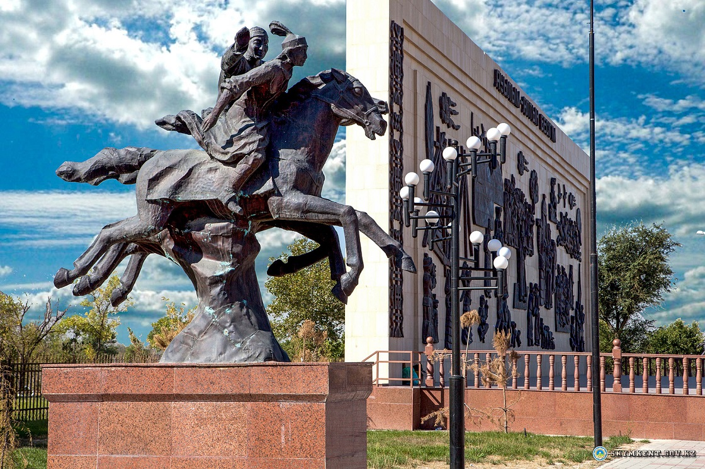
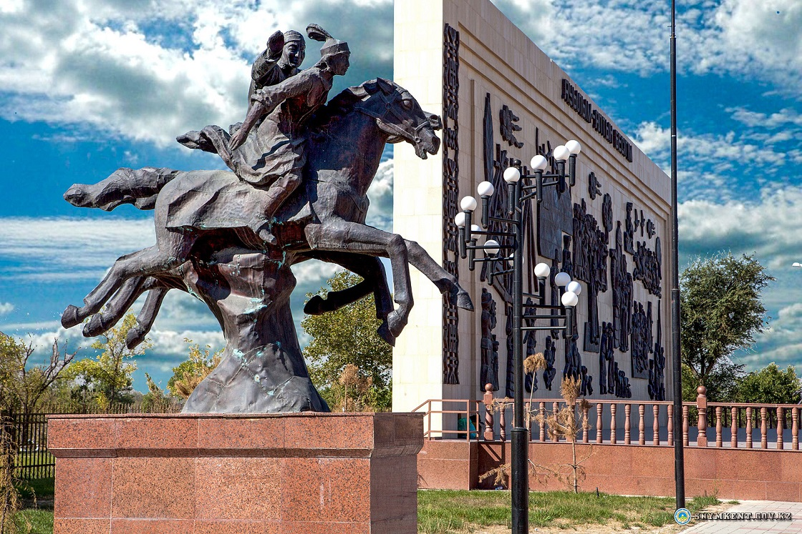

Shymkent welcomes those who would love to discover authentic flavor of Central Asia.
Known from ancient times as a flourishing city on the Great Silk Road, nowadays Shymkent is the largest city in Kazakhstan in terms of area and is known as a heart of the Southern Kazakhstan.
The city’s name is translated as ‘a garden city’, and if you come here, you will definitely understand why: the city is a real oasis in the middle of vast steppes.
 

There are seven huge shady parks, where you can see many animals and birds in their natural habitat.
Be sure to visit the Dendrological Park, a favorite place for leisure walks, among not only travelers, but also the majority of the local people.
Supporting 'the oasis city' concept, Shymkent is famous for a huge number of water parks, where you can swim in pure and refreshing water, take a ride on the water slide or enjoy hydromassage.
After such an active day, you will definitely want to eat – feel free to visit any restaurant serving quite rich, but incredibly delicious local treats: prices in Shymkent are very reasonable, and the food is varied.
Traditional dishes that you must try here are golden and crumbly, authentic local Pilaf, aromatic Lagman, samsa, and much more.
After such a rich program and entertainment, be sure to visit iconic and historical places in Shymkent, in order to feel the atmosphere of the ancient city as best you can:
Be sure to visit as many cultural and historical sights as possible, as Shymkent is a city with a rich history and past. The city at the present is also very interesting and attractive, so you can always find some new places to explore.
The website was created with information taken from Kazakhstan Travel